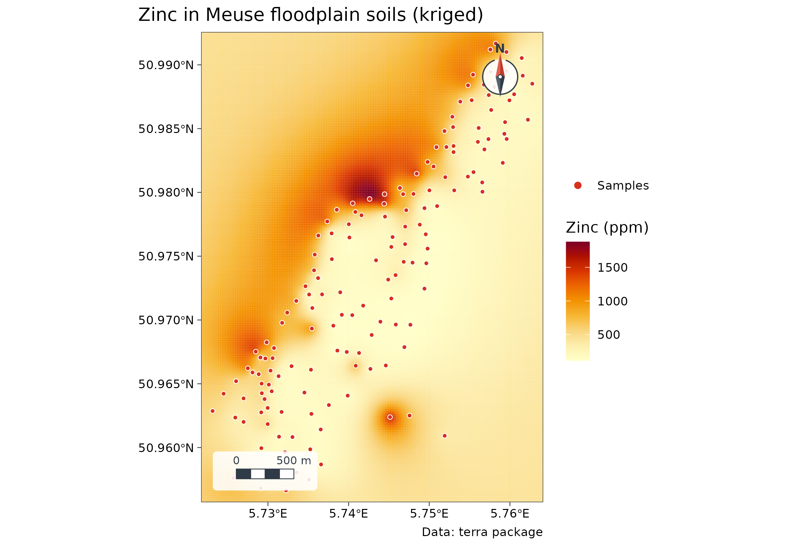
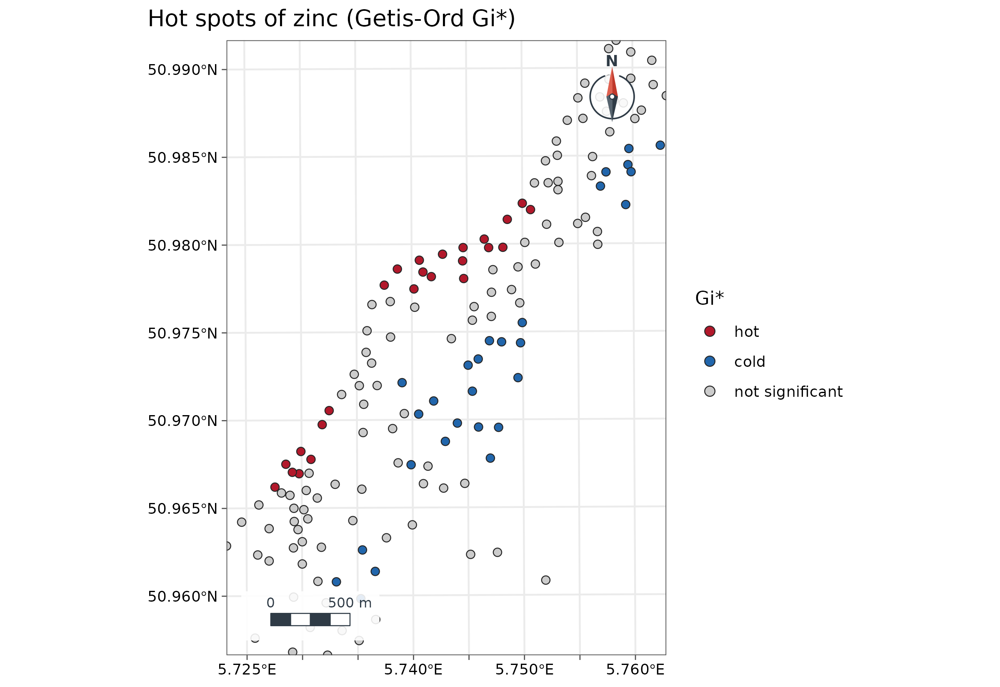
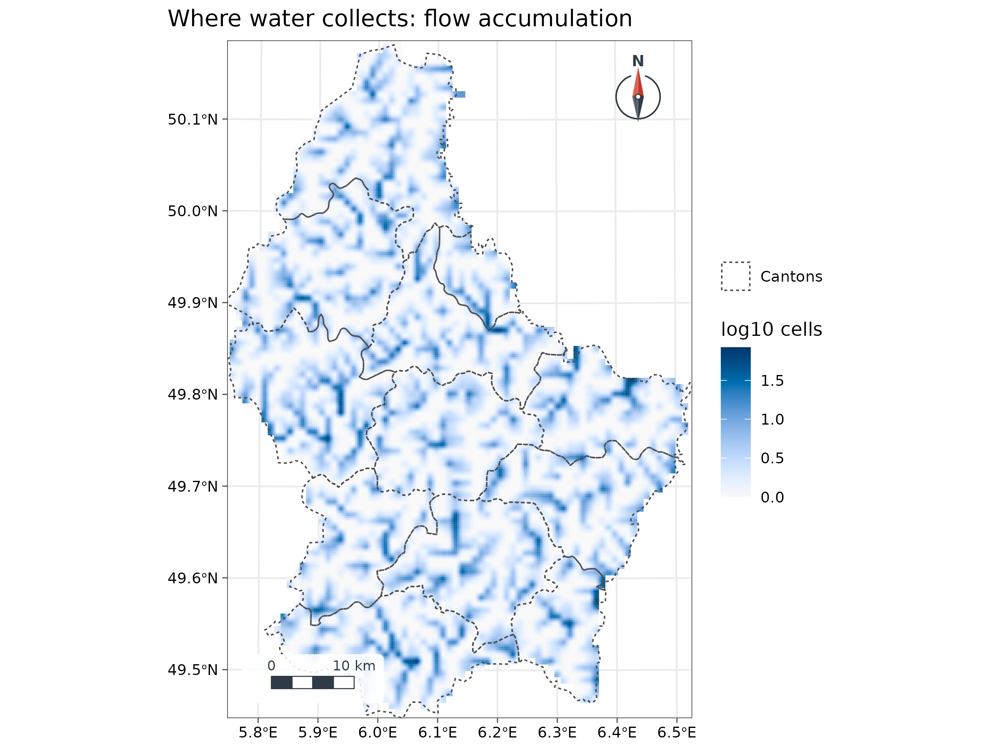
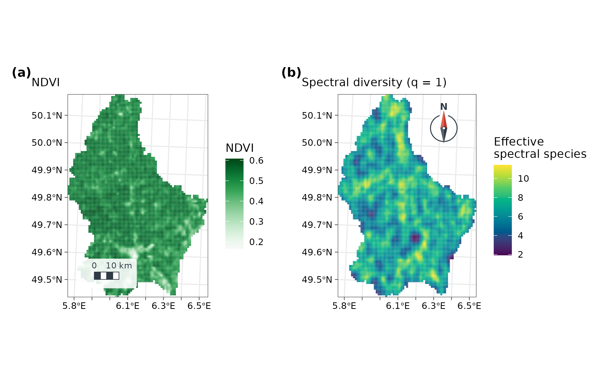

Spatial analysis
geospatial.RmdThe analysis tools of a desktop GIS, written in C++ and run on several cores, each checked against the reference R package. Every example uses real data shipped with R packages.
This page is a tour of every family of methods in one place. Each section gives the concept in brief, the code, and how to read the output; the numbered chapters of the user guide explain each method in full and show how to report it.
Interpolation: kriging and IDW
The concept. Samples are taken at points, but maps and models need values everywhere. Interpolation predicts unsampled places from nearby samples. Inverse-distance weighting (IDW) simply averages neighbours, weighting near ones more. Kriging first measures how similarity decays with distance (the variogram) and uses it to choose the weights, which also gives the prediction variance: where the map can be trusted. Full explanation: Chapter 4.
Zinc in the floodplain soils of the river Meuse (155 samples, shipped
with terra). geo_interpolate() krigs with a fitted
variogram; its results equal gstat’s to machine precision.
meuse <- terra::unwrap(readRDS(system.file("ex/meuse.rds", package = "terra")))
samples <- sf::st_as_sf(as.data.frame(meuse), coords = c("x", "y"), crs = 28992)
samples$log_zinc <- log(samples$zinc)
grid <- terra::rast(terra::ext(terra::vect(samples)) + 100, resolution = 20, crs = "EPSG:28992")
zinc <- geo_interpolate(samples, log_zinc, grid, method = "kriging", name = "log_zinc")
zinc
#> class : SpatRaster
#> size : 205, 149, 2 (nrow, ncol, nlyr)
#> resolution : 20.03356, 19.98537 (x, y)
#> extent : 178505, 181490, 329614, 333711 (xmin, xmax, ymin, ymax)
#> coord. ref. : Amersfoort / RD New (EPSG:28992)
#> source(s) : memory
#> names : log_zinc, variance
#> min values : 4.735424, 0.00156
#> max values : 7.541052, 0.791856How to read it. The result has two layers:
log_zinc, the prediction on a 20 m grid, and
variance, the kriging variance, which is zero at the
samples and grows away from them. Map the variance next to the
prediction, or mask cells where it is high.
geo_map(title = "Zinc in Meuse floodplain soils (kriged)", caption = "Data: terra package") |>
map_raster(exp(zinc[["log_zinc"]]), name = "Zinc (ppm)", palette = "YlOrRd") |>
map_points(samples, preset = "sample_site", label = "Samples", size = 1.3)
GeoSpaX recipes
The same analysis as a GeoSpaX recipe, run unchanged in R: kriging against IDW by cross-validation, then a map and an HTML report.
rec <- geo_recipe_read(system.file("recipes/interpolate-samples.yaml", package = "tidymapr"))
rec
#> GeoSpaX recipe "interpolate-samples" (v2): Field samples → interpolated surface
#> (kriging or IDW, automatically)
#> Inputs: layer and field
#> Steps: samples (io.open), surface (interpolate.auto), style_samples
#> (automap.style), map (export.map), uncertainty (export.map), and report
#> (export.report)
#> Outputs: surface, map, uncertainty, and report
out <- geo_recipe_run(rec, inputs = list(layer = samples, field = "zinc"), dir = tempfile(), quiet = TRUE)
out$log
#> # A tibble: 6 × 4
#> step use status seconds
#> <chr> <chr> <chr> <dbl>
#> 1 samples io.open done 0
#> 2 surface interpolate.auto done 0.74
#> 3 style_samples automap.style done 0
#> 4 map export.map done 0.76
#> 5 uncertainty export.map done 0.71
#> 6 report export.report done 0How to read it. Each step of the recipe ran
(done), with its GeoSpaX tool (use) and run
time. interpolate.auto chose between kriging and IDW by
cross-validation; the outputs (out$surface,
out$map, out$report) are what GeoSpaX would
produce from the same file.
Hot spots and clusters
The concept. A global statistic (Moran’s I) asks whether values are spatially clustered; local statistics ask where. Getis-Ord Gi* compares the sum of values around each site with what random placement would give: a significantly high sum marks a hot spot, a low one a cold spot. Full explanation: Chapter 3.
Getis-Ord Gi* and local Moran’s I (LISA) find places of unusually high or low values; both match spdep.
hot <- geo_hotspot(sf::st_transform(samples, 4326), zinc, k = 8)
count(sf::st_drop_geometry(hot), hotspot)
#> hotspot n
#> 1 hot 24
#> 2 cold 28
#> 3 not significant 103
# Median zinc and distance to the river (as a fraction of the maximum) by class
sf::st_drop_geometry(hot) |>
group_by(hotspot) |>
summarise(zinc = median(zinc), dist_river = median(dist))
#> # A tibble: 3 × 3
#> hotspot zinc dist_river
#> <fct> <dbl> <dbl>
#> 1 hot 832. 0.0485
#> 2 cold 160 0.489
#> 3 not significant 342 0.201
geo_map(title = "Hot spots of zinc (Getis-Ord Gi*)", crs = 28992) |>
map_points(hot, fill = hotspot, group = "Gi*", palette = c(hot = "#B2182B", cold = "#2166AC", "not significant" = "grey80"), size = 2)
Interpretation. 24 sites are hot spots and 28 cold spots; the other 103 are not distinguishable from random. Hot spots have a median of about 830 ppm zinc and lie close to the river (median relative distance 0.05); cold spots have about 160 ppm and lie far from it (0.49). The pattern points to the source: zinc arrives with river sediment deposited during floods.
The concept. DBSCAN finds clusters as dense areas: a
point with at least min_pts neighbours within
eps is a core point, clusters grow from core points, and
points in sparse areas are noise. Unlike k-means, the number of clusters
is not fixed in advance and clusters can have any shape. Full
explanation: Chapter
7.
geo_dbscan() groups points into density clusters, here
1,000 earthquakes near Fiji (datasets::quakes), with
distances in metres.
cl <- geo_dbscan(datasets::quakes, eps = 50000, min_pts = 15, lon = long, lat = lat)
table(cl$cluster)
#>
#> 0 1 2 3 4 5 6 7 8 9
#> 513 259 23 25 76 19 26 17 27 15
attr(cl, "hulls")
#> Simple feature collection with 9 features and 2 fields
#> Geometry type: POLYGON
#> Dimension: XY
#> Bounding box: xmin: -179.98 ymin: -28.1 xmax: 179.69 ymax: -10.96
#> Geodetic CRS: WGS 84
#> cluster n geometry
#> 1 1 259 POLYGON ((-179.36 -22.64, -...
#> 2 2 23 POLYGON ((-175.94 -20.31, -...
#> 3 3 25 POLYGON ((165.76 -12.08, 16...
#> 4 4 76 POLYGON ((-179.98 -25.59, 1...
#> 5 5 19 POLYGON ((-174.68 -16.1, -1...
#> 6 6 26 POLYGON ((169.5 -19.64, 169...
#> 7 7 17 POLYGON ((-173.2 -15.66, -1...
#> 8 8 27 POLYGON ((-177.75 -28.1, -1...
#> 9 9 15 POLYGON ((-175.36 -23.95, -...How to read it. Cluster 0 is noise: 513
of the 1,000 earthquakes are not in any dense group. The other 487 fall
into nine clusters, the largest with 259 events; hulls
gives each cluster’s outline for mapping. With 50 km and 15 events, the
clusters trace the densest parts of the Tonga-Kermadec and Vanuatu
subduction zones.
Terrain and hydrology
The concept. Water flows downhill. The D8 method sends each cell’s water to its steepest neighbour; summing the cells that drain through each cell gives flow accumulation, whose high values trace the stream network. Full explanation: Chapter 6.
D8 flow direction, flow accumulation, watersheds and the topographic wetness index on Luxembourg’s elevation model; they match terra.
dem <- terra::project(terra::rast(system.file("ex/elev.tif", package = "terra")), "EPSG:2169")
acc <- geo_flow_accumulation(dem)
cantons <- sf::st_read(system.file("ex/lux.shp", package = "terra"), quiet = TRUE)
geo_map(title = "Where water collects: flow accumulation") |>
map_raster(log10(acc), name = "log10 cells", palette = "Blues 3") |>
map_polygons(cantons, preset = "admin", label = "Cantons")
How to read it. Values are on a log scale: dark lines are cells that collect water from thousands of upslope cells, the valley floors of rivers; pale areas are ridges and hillslopes that drain few cells.
Remote sensing
The concept. Plants absorb red light and reflect near-infrared, so the normalised difference of the two (NDVI, -1 to 1) measures green vegetation. Spectral diversity treats clusters of similar pixel spectra as “spectral species” and counts them in Hill numbers in a moving window, a proxy for habitat heterogeneity (Féret and Asner 2014). Full explanation: Chapter 6.
Spectral indices with an automatic (Otsu) threshold, and spectral diversity in Hill numbers, on a Sentinel-2 scene of Luxembourg.
s2 <- terra::rast(system.file("ex/sent2_L2A_2024-08-24.tif", package = "terra"))
ndvi <- geo_spectral_index(s2, "NDVI")
set.seed(1)
sdiv <- geo_spectral_diversity(s2, window = 5, k = 15)
a <- geo_map(subtitle = "NDVI", north_arrow = FALSE) |>
map_raster(ndvi, name = "NDVI", palette = "Greens 3")
b <- geo_map(subtitle = "Spectral diversity (q = 1)", scale_bar = FALSE) |>
map_raster(sdiv[["q1"]], name = "Effective\nspectral species", palette = "viridis")
geo_panels(a, b, ncol = 2, guides = "keep")
How to read it. This scene is a late-August Sentinel-2 image resampled to about 1 km cells, so each value averages many land uses. Almost the whole country is vegetated (NDVI 0.12 to 0.64, median 0.52). The pale patches are built-up land: Luxembourg City in the south-centre and the towns of the former mining district along the southern border. At this resolution there are no open-water cells, which would have negative NDVI.
Spectral diversity is high where several kinds of pixel meet within the 5 x 5 cell window (mixed farmland, forest and villages) and low where the window falls in one uniform cover. It is only weakly related to NDVI (Spearman correlation -0.16): the two layers measure different things, how green a place is and how varied it is.
Fresh imagery comes from STAC catalogues; only the window over the area is downloaded:
city <- c(6.08, 49.57, 6.18, 49.65)
scenes <- geo_stac_search("sentinel-2-l2a", city,
datetime = c("2024-06-01", "2024-08-31"), cloud_cover = 10
)
img <- geo_stac_read(scenes, c("red", "nir"), area = city, n = 4)
geo_spectral_index(img, "NDVI")Landscape fragmentation
The concept. The same amount of habitat can be one block or many fragments, with very different consequences for species that need interior habitat. Landscape metrics quantify area, number of patches, edge and aggregation. Full explanation: Chapter 7.
FRAGSTATS metrics per land-cover class; they match landscapemetrics on projected rasters and are measured in true hectares on rasters in degrees.
e <- new.env()
utils::data("augusta_nlcd", package = "landscapemetrics", envir = e)
lc <- e$augusta_nlcd
if (inherits(lc, "PackedSpatRaster")) lc <- terra::unwrap(lc)
geo_landscape(lc) |> arrange(desc(ca)) |> head(6)
#> # A tibble: 6 × 9
#> class np ca pland lpi area_mn ed ai mesh
#> <dbl> <int> <dbl> <dbl> <dbl> <dbl> <dbl> <dbl> <dbl>
#> 1 42 1795 9991. 37.2 1.61 5.57 95.2 80.9 41.6
#> 2 41 1880 5036. 18.8 1.27 2.68 72.3 71.2 9.85
#> 3 81 828 2281. 8.49 0.373 2.75 29.7 74.1 1.94
#> 4 43 2402 2133. 7.94 0.0825 0.888 55.9 47.3 0.225
#> 5 71 1300 1693. 6.31 0.306 1.30 26.8 68.5 1.01
#> 6 21 3757 1398. 5.21 0.0801 0.372 44.2 36.4 0.150
geo_landscape(lc, "landscape")
#> # A tibble: 1 × 6
#> np ta ed shdi sidi mesh
#> <int> <dbl> <dbl> <dbl> <dbl> <dbl>
#> 1 17141 26849. 204. 1.99 0.801 59.6How to read it. For each National Land Cover class:
np patches, ca total area (ha),
pland share of the landscape (%), lpi the
largest patch as % of the landscape, area_mn mean patch
size (ha), ed edge density (m/ha), ai
aggregation index (100 = one compact block) and mesh the
effective mesh size (ha), the expected size of the patch a random point
falls in. Evergreen forest (class 42) covers 37% of this landscape
around Augusta, Georgia, and is the most aggregated class
(ai 81). Developed open space (21) is split into 3,757 tiny
patches (mean 0.4 ha, ai 36): highly fragmented. At
landscape level, Shannon diversity of cover types (shdi) is
1.99.
Species distribution models
The concept. A species distribution model relates where a species was recorded to the environment there, and predicts habitat suitability everywhere. Because records cluster in space, models are evaluated by spatial cross-validation, holding out whole blocks, so the score measures prediction into new areas. Full explanation: Chapter 5.
sdm_maxent() fits Maxent in C++ and
sdm_ensemble() combines it with a GLM, a GAM and a random
forest under spatial cross-validation. See the sloth case study for a complete
example.